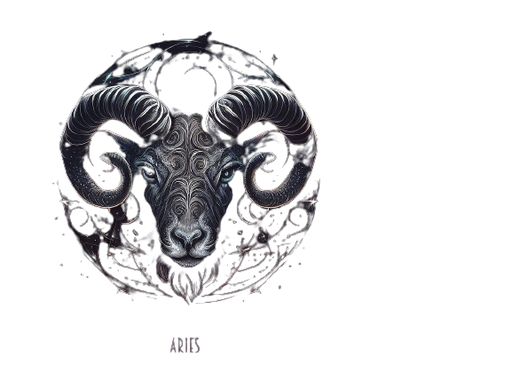

Aries
Aries is the first sign of the zodiac and is associated with fire energy. People born under this sign are often independent, assertive, and impulsive. They are natural leaders and are always ready to take on a challenge, often being pioneers in new fields. They have a great deal of energy and drive, and are always looking for new opportunities and experiences.
They are also fiercely competitive and can be quite aggressive in pursuing their goals. However, their impulsive nature can sometimes lead them to make rash decisions or act without thinking things through. They can also be seen as selfish and hot-headed at times. Despite their flaws, Arians are generally admired for their courage, confidence, and enthusiasm.

Aries is the first sign of the zodiac and is associated with fire energy. People born under this sign are often independent, assertive, and impulsive. They are natural leaders and are always ready to take on a challenge, often being pioneers in new fields. They have a great deal of energy and drive, and are always looking for new opportunities and experiences.
They are also fiercely competitive and can be quite aggressive in pursuing their goals. However, their impulsive nature can sometimes lead them to make rash decisions or act without thinking things through. They can also be seen as selfish and hot-headed at times. Despite their flaws, Arians are generally admired for their courage, confidence, and enthusiasm.
Aries Compatiblity with:
- Aries
- Taurus
- Gemini
- Cancer
- Leo
- Virgo
- Libra
- Scorpio
- Sagittarius
- Capricorn
- Aquarius
- Pisces